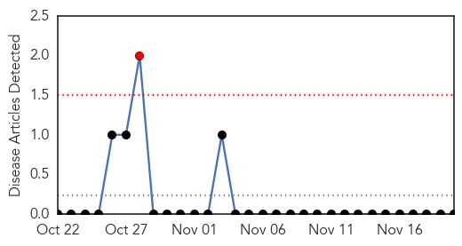
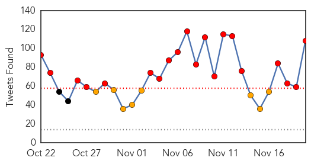
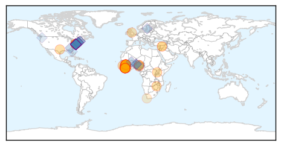
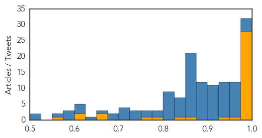

Hemmorhagic Fever
30-Day Web Trend
1 alerts, 0 warnings

30-Day Twitter Trend
0 alerts, 0 warnings

Article Locations

Article Confidences

Top Articles:
-
No articles found for Nov 20, 2015
Top Tweets:
-
No tweets found for Nov 20, 2015
Ebola
30-Day Web Trend
0 alerts, 0 warnings

30-Day Twitter Trend
20 alerts, 8 warnings

Article Locations
Article Confidences
Top Articles:
- 1.000
- 3 new confirmed cases in previously Ebola-free Liberia
- 1.000
- No Longer Ebola-Free: Liberia Reports New Case
- 1.000
- Liberia Confirms New Ebola Case in 10-year-old Boy : Physical Wellness : Counsel & Heal
- 1.000
- 3 new confirmed cases in previously Ebola-free Liberia: WHO
- 1.000
- Three New Confirmed Cases In Previously Ebola-free Liberia -WHO
- 1.000
- iafrica.com New Ebola case in Liberia
- 1.000
- Is Ebola back?
- 0.999
- New case reported in Liberia which was declared Ebola free in September
- 0.999
- UPDATE – 3 new Ebola case in Liberia 2 months after all-clear
- 0.999
- Zim hospital closed to monitor suspected Ebola case
- 0.999
- New case of Ebola in Liberia
- 0.999
- New Ebola case confirmed in Liberia
- 0.999
- Ebola crisis: Liberia confirms fresh cases
- 0.999
- The Guardian on Liberia's new Ebola cases
- 0.999
- Africa - News and Analysis
- 0.998
- US Marines land in Ebola hot zone
- 0.998
- WHO: One New Confirmed Case in Previously Ebola-Free Liberia — Naharnet
- 0.998
- 3 new Ebola case in Liberia 2 months after all-clear
- 0.997
- WHO declares end of Ebola outbreak in Sierra Leone
- 0.997
- Ebola lingers in Liberia; boy, 10, infected
- 0.995
- McCain calls for Ebola 'czar'
- 0.995
- Three new confirmed cases in previously Ebola-free Liberia: WHO
- 0.994
- Germany takes 3rd Ebola patient for treatment
- 0.992
- Ebola virus returns to Liberia, 10-year-old boy infected
- 0.990
- Family case cluster ends Liberia's Ebola-free status
- 0.989
- Nina Pham talks advocacy to aspiring health professionals
- 0.987
- Ebola resurfaces in Liberia
- 0.985
- One new confirmed case in previously Ebola-free Liberia: WHO
- 0.966
- New Case Of Ebola Identified In Liberia
- 0.944
- UPDATE 1-New situation of Ebola present in Liberia -Not official
- 0.852
- Locking nurse given medal for Ebola work
- 0.836
- What the refugee panic shares with the Ebola panic
- 0.779
- African leaders, UN, IMF, World Bank discuss Ebola
- 0.763
- CRMC working to create a culture of safety
- 0.661
- Trinidad & Tobago lifts ban on Nigerian travellers
- 0.650
- EXCLUSIVE:Future bright for Sierra Leone, bleak for girls
- 0.615
- Over 250 midwives honored in Bong
- 0.603
- Ebola, Syrian Refugees, And Fox News' Annual Hysteria Over Dark, Invading Forces
- 0.552
- Health experts to take fight to TB
Top Tweets:
- 1.000
- Nach Ebola: Überlebende kämpfen mit Folgeerkrankungen africaagainstebola
- 0.998
- Ebola Resurfaces in Liberia - 2 New Cases Confirmed - https://t.co/8699rqWqNV ebola
- 0.996
- Nieuw geval van ebola in ebolavrij verklaard Liberia - https://t.co/381lyAFtQW ebola
- 0.996
- L'épidémie d'Ebola repart au Liberia - https://t.co/fHHxrlVGmD ebola
- 0.996
- Ebola In Liberia: 1 Confirmed Case Of Disease In Previously Ebola-Free African Country ... - https://t.co/24L3hLXqfK ebola
- 0.995
- Ebola resurfaces in Liberia - report - https://t.co/ng5LgAujh1 ebola
- 0.995
- Ebola - https://t.co/BziwFRlHxG ebola
- 0.994
- Health authorities: 3 new Ebola cases in Liberia - https://t.co/TkHKO8XEpQ ebola
- 0.994
- Fears of Deadly Ebola Virus Reportedly Resurface in Liberia > Monro - Front Page Africa https://t.co/YRQRJ99AfB ebola EVD
- 0.994
- Ebola Virus Disease Outbreaks:Situation Update,19 November 2015 - https://t.co/Qyn04Lgwk6 ebola
- 0.994
- Ebola Deeply on the Monrovia cases - https://t.co/LBwa9upSEj ebola
- 0.993
- Guinea: Last Ebola patient tests negative - https://t.co/hRaoKBkBsG ebola
- 0.993
- Ebola case confirmed in Liberia - https://t.co/QuuiKoLGqB ebola
- 0.993
- Ebola Update - https://t.co/joXi5h6mUe ebola
- 0.993
- Ebola Update - https://t.co/VOxdJ7mgaH ebola
- 0.991
- More details on Liberia's dismaying cluster of Ebola cases from. Did virus in semen reignite Ebola? https://t.co/TllUhgSi3Y
- 0.991
- Fears of Deadly Ebola Virus Reportedly Resurface in Liberia > Monro - https://t.co/I6zwYCKeiZ ebola
- 0.990
- Salmonella outbreak sickens 838 people - https://t.co/vBqlqkrsTc ebola
- 0.990
- Ebola reappears in Liberia after country is twice declared disease-free - https://t.co/kSanHqFan7 ebola
- 0.990
- Ebola crisis: Liberia confirms fresh cases - https://t.co/FiE1fKLklY ebola
- 0.989
- Health authorities report 1 confirmed Ebola case in Liberia, previously declared Ebola free - https://t.co/w31YoKuv8Y ebola
- 0.989
- Health authorities report 1 confirmed Ebola case in Liberia, previously declared Ebola free - https://t.co/B1xiQIrjyk ebola
- 0.989
- Health authorities report 1 confirmed Ebola case in Liberia, previously declared Ebola free - https://t.co/7hZhKQK37q ebola
- 0.989
- Fresh Ebola case reported in Liberia - https://t.co/xTNRVHuqLF ebola
- 0.988
- Health authorities: 1 confirmed Ebola case in Liberia - https://t.co/zAQJ1Dc3YI ebola
- 0.988
- Health authorities: 1 confirmed Ebola case in Liberia - https://t.co/iVJcWMWxd7 ebola
- 0.988
- Health authorities: 1 confirmed Ebola case in Liberia - https://t.co/8aMvngrYPL ebola
- 0.988
- Health Authorities: 1 Confirmed Ebola Case in Liberia - https://t.co/7Dz8yQYcpx ebola
- 0.986
- One confirmed Ebola case in Liberia: Health authorities - https://t.co/YTLgPdtYwB ebola
- 0.986
- Health authorities: one confirmed Ebola case in Liberia - https://t.co/u0DlGpKtDY ebola
- 0.985
- Ebola case in Liberia confirmed by WHO - https://t.co/uYtzAaHxA4 ebola
- 0.983
- One new Ebola case confirmed in Liberia: WHO - https://t.co/z4zzwpjDG3 ebola
- 0.983
- Liberia records fresh Ebola case - https://t.co/aMEGRvqQEB ebola
- 0.982
- New Ebola case hits Liberia after country declared virus free - https://t.co/JMrYo2XgWt ebola
- 0.982
- New Ebola case confirmed in Liberia - https://t.co/hMELsyGUFJ ebola
- 0.982
- New Ebola case confirmed in Liberia - https://t.co/eCOKGToBCx ebola
- 0.978
- 3 new confirmed cases in previously Ebola-free Liberia - https://t.co/nC6iYFcino ebola
- 0.974
- Young doctor receives OBE from Prince Charles for Ebola work in Sierra Leone - https://t.co/sYX40HSNaw ebola
- 0.974
- Health Authorities: 1 Confirmed Ebola Case in Liberia - New York Times https://t.co/uyXKi6BTvn ebola EVD
- 0.973
- Liberia records new Ebola case - https://t.co/AwxX6zCooP ebola
- 0.971
- New case of Ebola found in Liberia: UN official - Reuters https://t.co/MAmh1aeNvx ebola EVD
- 0.971
- Ebola Cases in 3 Family Members Confirmed in Liberia - New York Times https://t.co/J6w8coovj8 ebola EVD
- 0.971
- Confirmed Ebola Case in Liberia - https://t.co/tzALHSwww4 ebola
- 0.970
- New case of Ebola found in Liberia: UN official - https://t.co/alE7slm9bo ebola
- 0.970
- New case of Ebola found in Liberia -UN official - https://t.co/MI8YC3ZnKg ebola
- 0.969
- New Ebola case found in Liberia - https://t.co/tarxr8y6iy ebola
- 0.969
- New Ebola case found in Liberia - https://t.co/dZNpD0Rw2u ebola
- 0.968
- Liberia: Ebola in three family members confirmed - https://t.co/AIyFqOFPOS ebola
- 0.967
- New case of Ebola found in Liberia, says UN official - https://t.co/3E7y1Cbr54 ebola
- 0.967
- New Case of Ebola Found in Liberia, UN Official Says - https://t.co/EVyGOnhi0d ebola
Showing top 50 tweets...